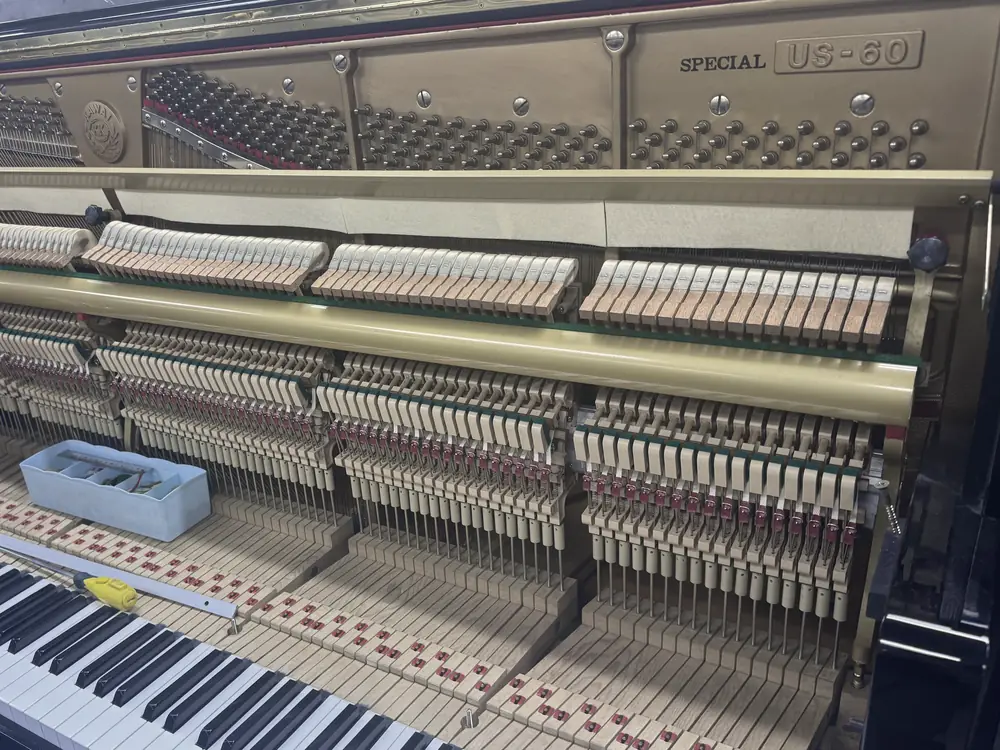
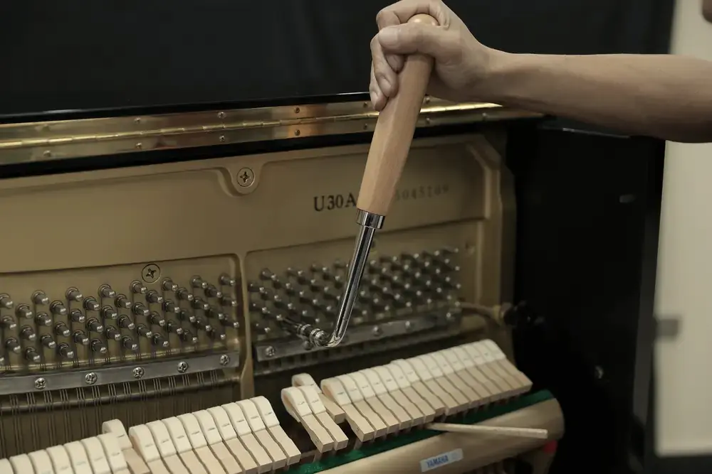
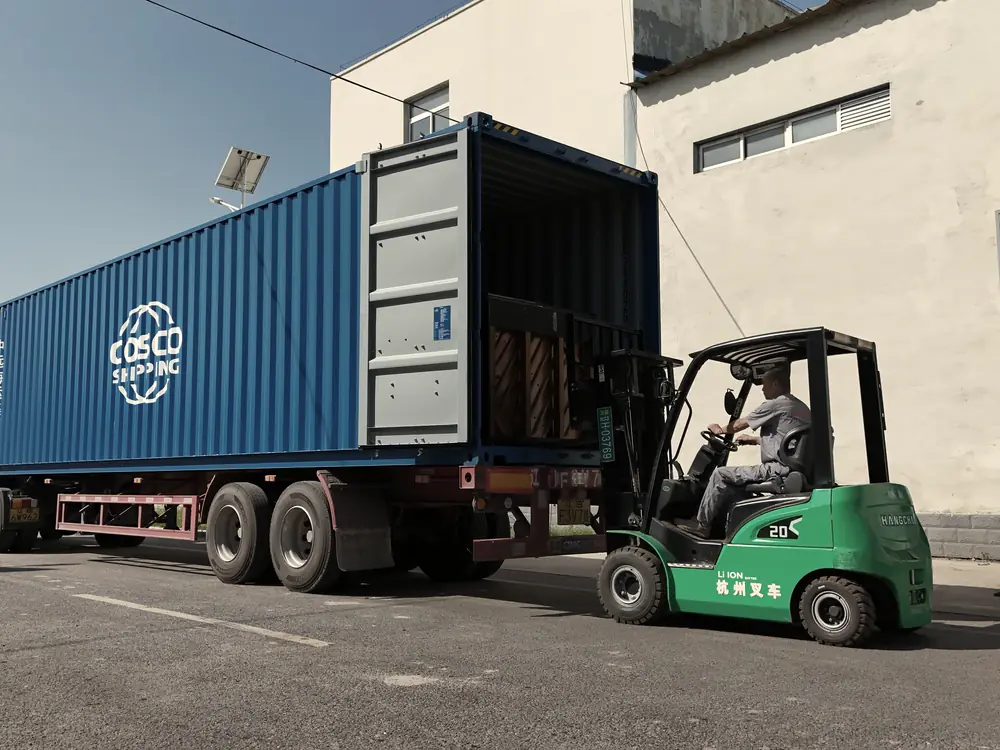

Yamaha
- アップライト
- U30MhC · UX30BiC · YU10SG · W3AWn · b113DMC
- グランド
- G2B · C1SN · C3XA · C7X · C2XCP
安定した品質と、プロフェッショナルなピアノ供給。
Angel Musicalは、10か国以上のピアノ販売店、ディーラー、ディストリビューターに日本製リビルトピアノを供給しています。
匠の修復 長く続く価値 世界をつなぐ
01 — 私たちについて
Angel Musical Instrument (Liaoning) Co., Ltd.は、2020年に営口総合保税区で事業を開始し、輸入中古ピアノの保税物流を専門としております。
仕入れから整備、輸出物流までを当社が担いますので、お客様は販売に専念していただけます。一つひとつのお取引を、長くお付き合いいただくための関係と考えております。
この業界では、信用は貨物よりもゆっくりと届き、そして長く残ります。
目先の取引を追うよりも、一便ごとに信頼を積み重ねることを大切にしています。取扱量は変わっても、パートナーシップは変わるべきではありません。

02 — 工程
入荷検品からコンテナ積み込みまで、各工程で品質検査を行い、合格したピアノのみを出荷いたします。



ピアノは中央倉庫に入荷後、一台ずつ専門的な評価を受けます。新品に近い状態まで整備できるピアノのみが工房に入ります。
内部と外装を徹底的に清掃し、長年たまったほこりや汚れ、残留物を取り除きます。
細やかな研磨とポリッシュで傷やくすみを取り除き、鏡面に仕上げます。
鍵盤表面を象牙のような滑らかな手触りに磨き上げ、ひび割れや損傷のあるものは適合する素材で交換します。
技術者が内部のアクション部品を交換・調整します。すべての部品が0.01 mmの公差を満たす必要があります。
全面的なアップグレードをご希望のお客様には、弦やハンマーなどの主要部品を再生し、精密に調整いたします。
鍵盤の重さ・高さ・深さを測定し、メーカー出荷時の仕様に合わせて調整します。
一音ずつ調整して全音域で均一な音色とバランスを整え、最後に精密な調律を行います。
すべての部品を確認します。不具合があれば再作業を行い、合格したピアノのみを出荷いたします。
整備済みのピアノは専門的に梱包して海上コンテナに積み込み、大連港から世界各地のパートナーへ出荷いたします。
工房の様子
専用の屋内作業場で、技術者が内部のアクション部品を交換・調整します。すべての部品を0.01 mmの公差に収め、反応が良く弾きやすいタッチに仕上げます。
03 — 製品

その他の日本ブランドのアップライト・グランドピアノも取り扱っております。
全モデルを見る04 — 1861年開港 · 条約港
Angel Musicalは、遼河が遼東湾に注ぐ遼寧省営口に拠点を置いています。天津条約（1858年）により河港の牛荘が対外貿易港に指定されましたが、川の土砂堆積のため、1861年に下流の営口で開港しました。中国東北地方で最初の条約港です。西洋の商人は、条約上の名称である「牛荘（ニューチャン）」をそのまま使い続けました。
1864年にはこの地に牛荘海関（税関）が開設され、地域で最初の税関となりました。その後数十年にわたり、営口は満洲の交易の主要な窓口となり、各国の領事館、商館、銀行、教会が建てられました。当時の建物は、今も旧市街の川沿いに残っています。
現在、深水港である鮁魚圏港区を擁する営口港は中国東北地方有数の港で、南へ約200 kmの距離に大連があります。160年以上にわたり世界と交易を続けてきたこの街で、私たちは仕事をしています。